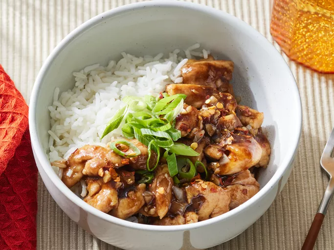

Home
Bourbon Chicken

Description
Bourbon chicken is a dish with New Orleans roots that's easy to make with chicken thigh pieces cooked in a sweet brown sugar, bourbon, ginger, garlic, and soy sauce glaze. Serve with rice for a restaurant-worthy meal.
Ingredients
- 1 ½ pounds skinless boneless chicken thighs, cut in 1-inch pieces
- 2 tablespoons cornstarch, divided
- 2 tablespoons olive oil, divided
- ¼ cup minced onion
- 2 cloves garlic, minced
- 1 teaspoon grated fresh ginger
- 1/3 cup reduced-sodium soy sauce
- 1/3 cup reduced sodium chicken broth
- 1/4 cup bourbon (or apple juice)
- 3 tablespoons packed brown sugar
- 1 tablespoon cider vinegar
- 1/4 teaspoon crushed red pepper
- 2 cups cooked rice
- 2 green onions, sliced
Steps
- Step 1: Gather Ingredients.
- Step 2: Toss chicken with 1 tablespoon cornstarch in a medium bowl
- Step 3: Heat 1 tablespoon oil in a 12-inch skillet over medium-high heat; add chicken. Cook and stir until browned; transfer to a plate using a slotted spoon.
- Step 4: Heat remaining 1 tablespoon oil in same skillet. Add onion, garlic, and ginger; cook and stir until softened and fragrant, 1 to 3 minutes.
- Step 5: Stir remaining 1 tablespoon cornstarch, soy sauce, broth, bourbon, brown sugar, vinegar, and crushed red pepper together in a small bowl.
- Step 6: Add sauce mixture to skillet; cook and stir until thickened and bubbly.
- Step 7: Return chicken to skillet. Cook and stir until coated in sauce and heated through, about 2 minutes.
- Step 8: Serve over rice. Top with green onions.